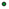

<!doctype html>
<html lang="en">
    <head>
        <meta charset="utf-8">
        <meta http-equiv="X-UA-Compatible" content="IE=edge">
        <meta name="viewport" content="initial-scale=1,user-scalable=no,maximum-scale=1,width=device-width">
        <meta name="mobile-web-app-capable" content="yes">
        <meta name="apple-mobile-web-app-capable" content="yes">
        <link rel="stylesheet" href="css/leaflet.css"><link rel="stylesheet" href="css/L.Control.Locate.min.css">
        <link rel="stylesheet" href="css/qgis2web.css"><link rel="stylesheet" href="css/fontawesome-all.min.css">
        <link rel="stylesheet" href="css/leaflet-control-geocoder.Geocoder.css">
        <link rel="stylesheet" href="css/leaflet-measure.css">
        <style>
        html, body, #map {
            width: 100%;
            height: 100%;
            padding: 0;
            margin: 0;
        }
        </style>
        <title></title>
    </head>
    <body>
        <div id="map">
        </div>
        <script src="js/qgis2web_expressions.js"></script>
        <script src="js/leaflet.js"></script><script src="js/L.Control.Locate.min.js"></script>
        <script src="js/leaflet.rotatedMarker.js"></script>
        <script src="js/leaflet.pattern.js"></script>
        <script src="js/leaflet-hash.js"></script>
        <script src="js/Autolinker.min.js"></script>
        <script src="js/rbush.min.js"></script>
        <script src="js/labelgun.min.js"></script>
        <script src="js/labels.js"></script>
        <script src="js/leaflet-control-geocoder.Geocoder.js"></script>
        <script src="js/leaflet-measure.js"></script>
        <script src="data/LimiteMunicipal_1.js"></script>
        <script src="data/Dimetroderboles_2.js"></script>
        <script>
        var map = L.map('map', {
            zoomControl:true, maxZoom:28, minZoom:1
        }).fitBounds([[19.259296711999976,-99.49097519331855],[19.289612806299328,-99.44624703442281]]);
        var hash = new L.Hash(map);
        map.attributionControl.setPrefix('<a href="https://github.com/tomchadwin/qgis2web" target="_blank">qgis2web</a> &middot; <a href="http://leafletjs.com" title="A JS library for interactive maps">Leaflet</a>');
        L.control.locate({locateOptions: {maxZoom: 19}}).addTo(map);
        var measureControl = new L.Control.Measure({
            position: 'topleft',
            primaryLengthUnit: 'meters',
            secondaryLengthUnit: 'kilometers',
            primaryAreaUnit: 'sqmeters',
            secondaryAreaUnit: 'hectares'
        });
        measureControl.addTo(map);
        document.getElementsByClassName('leaflet-control-measure-toggle')[0]
        .innerHTML = '';
        document.getElementsByClassName('leaflet-control-measure-toggle')[0]
        .className += ' fas fa-ruler';
        var bounds_group = new L.featureGroup([]);
        function setBounds() {
        }
        var layer_GoogleMaps_0 = L.tileLayer('https://mt1.google.com/vt/lyrs=m&x={x}&y={y}&z={z}', {
            opacity: 1.0
        });
        layer_GoogleMaps_0.addTo(map);
        map.addLayer(layer_GoogleMaps_0);
        function pop_LimiteMunicipal_1(feature, layer) {
        }

        function style_LimiteMunicipal_1_0() {
            return {
                pane: 'pane_LimiteMunicipal_1',
                opacity: 1,
                color: 'rgba(0,0,0,1.0)',
                dashArray: '10,5',
                lineCap: 'butt',
                lineJoin: 'miter',
                weight: 2.0, 
                fill: true,
                fillOpacity: 1,
                fillColor: 'rgba(190,207,80,0.0)',
            }
        }
        map.createPane('pane_LimiteMunicipal_1');
        map.getPane('pane_LimiteMunicipal_1').style.zIndex = 401;
        map.getPane('pane_LimiteMunicipal_1').style['mix-blend-mode'] = 'normal';
        var layer_LimiteMunicipal_1 = new L.geoJson(json_LimiteMunicipal_1, {
            attribution: '',
            pane: 'pane_LimiteMunicipal_1',
            onEachFeature: pop_LimiteMunicipal_1,
            style: style_LimiteMunicipal_1_0,
        });
        bounds_group.addLayer(layer_LimiteMunicipal_1);
        map.addLayer(layer_LimiteMunicipal_1);
        function pop_Dimetroderboles_2(feature, layer) {
        }

        function style_Dimetroderboles_2_0(feature) {
            if (feature.properties['q2wHide_Diámetro'] >= 2.000000 && feature.properties['q2wHide_Diámetro'] <= 8.600000 ) {
                return {
                pane: 'pane_Dimetroderboles_2',
                radius: 2.0,
                opacity: 1,
                color: 'rgba(35,35,35,0.8)',
                dashArray: '',
                lineCap: 'butt',
                lineJoin: 'miter',
                weight: 1,
                fill: true,
                fillOpacity: 1,
                fillColor: 'rgba(0,142,42,0.8)',
            }
            }
            if (feature.properties['q2wHide_Diámetro'] >= 8.600000 && feature.properties['q2wHide_Diámetro'] <= 15.200000 ) {
                return {
                pane: 'pane_Dimetroderboles_2',
                radius: 7.0,
                opacity: 1,
                color: 'rgba(35,35,35,0.8)',
                dashArray: '',
                lineCap: 'butt',
                lineJoin: 'miter',
                weight: 1,
                fill: true,
                fillOpacity: 1,
                fillColor: 'rgba(0,142,42,0.8)',
            }
            }
            if (feature.properties['q2wHide_Diámetro'] >= 15.200000 && feature.properties['q2wHide_Diámetro'] <= 21.800000 ) {
                return {
                pane: 'pane_Dimetroderboles_2',
                radius: 12.0,
                opacity: 1,
                color: 'rgba(35,35,35,0.8)',
                dashArray: '',
                lineCap: 'butt',
                lineJoin: 'miter',
                weight: 1,
                fill: true,
                fillOpacity: 1,
                fillColor: 'rgba(0,142,42,0.8)',
            }
            }
            if (feature.properties['q2wHide_Diámetro'] >= 21.800000 && feature.properties['q2wHide_Diámetro'] <= 28.400000 ) {
                return {
                pane: 'pane_Dimetroderboles_2',
                radius: 17.0,
                opacity: 1,
                color: 'rgba(35,35,35,0.8)',
                dashArray: '',
                lineCap: 'butt',
                lineJoin: 'miter',
                weight: 1,
                fill: true,
                fillOpacity: 1,
                fillColor: 'rgba(0,142,42,0.8)',
            }
            }
            if (feature.properties['q2wHide_Diámetro'] >= 28.400000 && feature.properties['q2wHide_Diámetro'] <= 35.000000 ) {
                return {
                pane: 'pane_Dimetroderboles_2',
                radius: 22.0,
                opacity: 1,
                color: 'rgba(35,35,35,0.8)',
                dashArray: '',
                lineCap: 'butt',
                lineJoin: 'miter',
                weight: 1,
                fill: true,
                fillOpacity: 1,
                fillColor: 'rgba(0,142,42,0.8)',
            }
            }
        }
        map.createPane('pane_Dimetroderboles_2');
        map.getPane('pane_Dimetroderboles_2').style.zIndex = 402;
        map.getPane('pane_Dimetroderboles_2').style['mix-blend-mode'] = 'normal';
        var layer_Dimetroderboles_2 = new L.geoJson(json_Dimetroderboles_2, {
            attribution: '',
            pane: 'pane_Dimetroderboles_2',
            onEachFeature: pop_Dimetroderboles_2,
            pointToLayer: function (feature, latlng) {
                var context = {
                    feature: feature,
                    variables: {}
                };
                return L.circleMarker(latlng, style_Dimetroderboles_2_0(feature));
            },
        });
        bounds_group.addLayer(layer_Dimetroderboles_2);
        map.addLayer(layer_Dimetroderboles_2);
        var osmGeocoder = new L.Control.Geocoder({
            collapsed: true,
            position: 'topleft',
            text: 'Search',
            title: 'Testing'
        }).addTo(map);
        document.getElementsByClassName('leaflet-control-geocoder-icon')[0]
        .className += ' fa fa-search';
        document.getElementsByClassName('leaflet-control-geocoder-icon')[0]
        .title += 'Search for a place';
        var baseMaps = {};
        L.control.layers(baseMaps,{'Diámetro de árboles:<br /><table><tr><td style="text-align: center;"></td><td> 2 - 9 m</td></tr><tr><td style="text-align: center;"></td><td> 9 - 15 m</td></tr><tr><td style="text-align: center;"></td><td> 15 - 22 m</td></tr><tr><td style="text-align: center;"></td><td> 22 - 28 m</td></tr><tr><td style="text-align: center;"></td><td> 28 - 35 m</td></tr></table>': layer_Dimetroderboles_2,' Limite Municipal': layer_LimiteMunicipal_1,"Google Maps": layer_GoogleMaps_0,},{collapsed:false}).addTo(map);
        setBounds();
        </script>
    </body>
</html>
